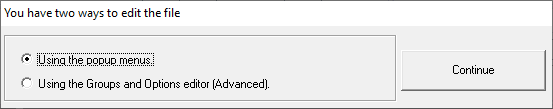

Once new "configuration file" is created, the application offers two ways to edit its contents. See next figure.

The option "Using the Groups and Options editor (Advanced)" opens the Combined editor for Groups and Options, that offer all the editing capabilities in a single and comprehensive form. This form can be opened at any moment with the menu option "Edit loaded configuration file" of the "Desktop Organizez files" menu. See Description of the User Interface.
The option "Using the popup menus" is the recommended starting method. Its functionalities are described in Edition of the configuration file.